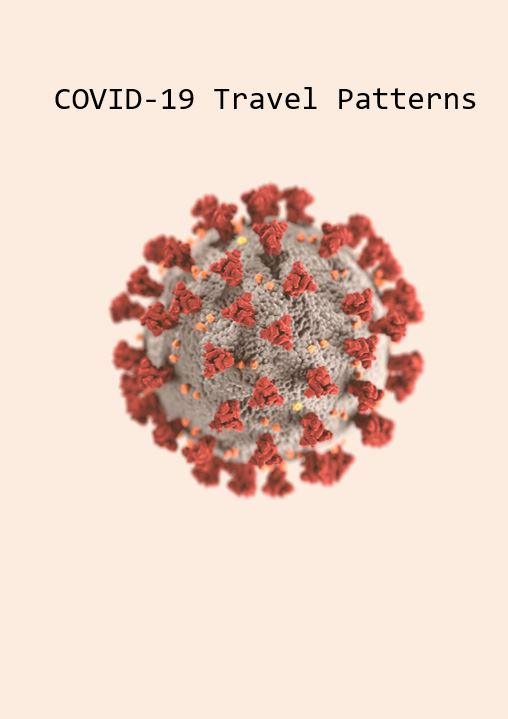
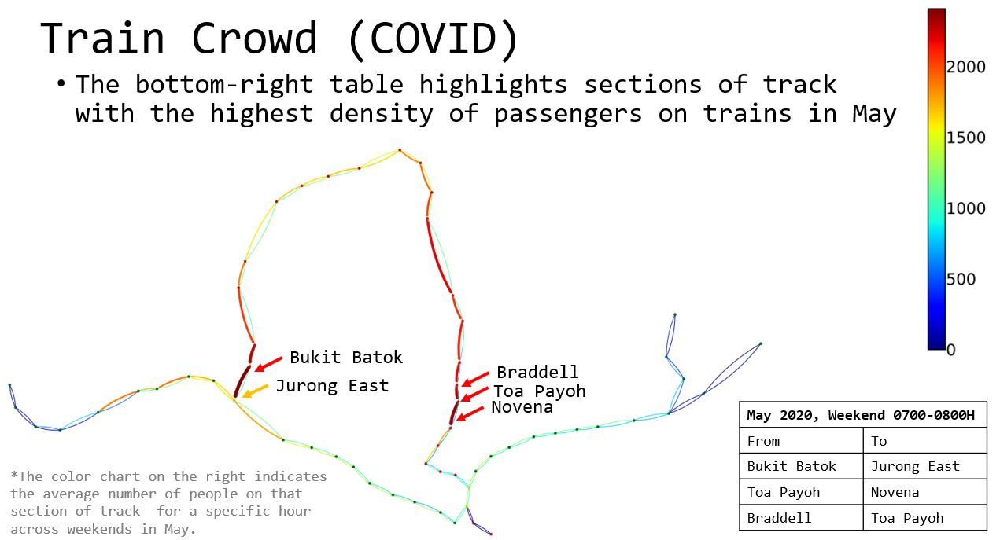
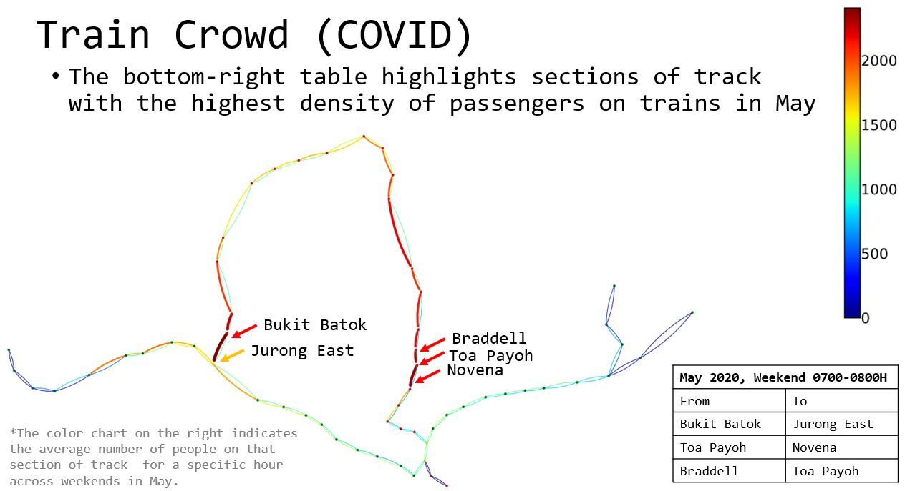

Analyzing railway passenger movement during COVID-19
During the COVID-19 pandemic, the behaviour of the different populations across the globe changed dramatically. With work-from-home, businesses closing, social gathering policies and many other constraints applied across the population, this is not surprising.
Naturally, the travel patterns of people were expected to change during this period as well, and based on these travel patterns, resources should be deployed accordingly to help minimize the spread of COVID-19. The main objectives I had for this project were simple:
The data for this project was based on annonymized trips made between January 2019 and December 2020 between stations on the North-South and East-West Line. I modelled the stations as nodes and mapped their GPS coordinates to a plane for a sense of distance. For the edges I had two different graph models to capture different aspects of movements. One model directly modeled trips between specific stations as edges, while the other model focused on the physical railway network and modeled movements through the network as edges. Due to the time dimension of the problem, all movements are aggregated at a specific interval and overlapping edges are stacked and add to the count of a single edge. In application, I generated thousands of reports containing characteristics and centralities of each time period for comparison of the graph's parameters across different times without having to look at each graph.
This was done by breaking the data from different lines separately and counting the number of trips made into a station for a given hour. Following this, by plotting the number of trips made to each station in a given hour across all hours, across all stations we can easily visualize when and where the highest density of passengers is achieved across space-time.
This was a little more complicated because the data consisted solely of start and end points of trips and the hour the trip started/ended - but there are multiple routes (not even including the Circle Line and Downtown Line) which a person could have taken to get from one point to another. This means we need to assume a specific route was taken for each trip. For this, I applied the Djikstra algorithm to compute the shortest time taken to complete the trip and assumed each passenger takes the trip with the shortest trip duration (this is not going to be 100% accurate as some people prefer not to make a line transfer despite an overall shorter trip duration).
For Djikstra to work in this case, I applied an additional transfer time penalty when a trip consists of nodes from both different lines because the time taken to transfer from one line to another is significant. Transfer stations by default belong to both lines and are exempted from this check to avoid confusion about which line the station belongs to for a given trip.
 

This was simpler than identifying crowded trains, I used group-by functions to quickly determine the edge weights leading out from one station to all other stations. After that I just had to tweak the edge visualization in such a way that there is some hope of identifying critical trips

There were a two additional things I wanted to figure out in this section (i) fewer trips were made, but do people make shorter trips during COVID-19, (ii) what were the detailed effects of circuit-breakers.
The answer was in fact, no, the trip length distribution did not change before and during COVID-19. This was actually quite interesting to me as I expected the population to evolve and make shorter trips sometime during the pandemic, but in actuality it was only the magnitude of the number of trips that changed, but not their distribution. A caveat, I did not actually conduct a statistical analysis of the distributions to prove that they were similar because the visuals were enough to convince myself.
Each color represents a specific trip length. Aside from extremely short trips of 1 station (which means the passenger went into and exited from the same station) and long trips that exceed 30 stations in length, most other trip lengths scale equally relative to each other (when short trips have a low count, long trips have a low count - regardless of COVID-19 which was recognized in March 2020.
The plots did bring to my attention the peaks in travel volume on certain days during COVID-19, which after a few searches, were confirmed to correspond closely to the COVID-19 policy implementation. As it turns out, due to the sudden nature of the policy introductions (this is merely my suspicion), whenever an announcement is made about a new policy which will be implemented soon (typically 1-3 days of notice), a substantial number of people will feel the need to make a trip out for the last supper or toilet paper - creating exceptionally high passenger densities. If this was intended effect of policies meant to limit the spread of COVID-19, then there is no issue.
Based on the above, I had the following recommendations to make:
If time permitted, I would have enjoyed extending this project to all other lines to see the actual national movement of passengers across the country. As it is, factoring the Circle Line and Downtown lines into the model would most likely have changed some of the station and trip passenger densities quite significantly. Additionally, extending the model to cover 2021 and beyond would have been interesting to see if the passenger movements have evolved further and if the measures that seek to limit the spread of COVID-19 can adapt together with these change in movements.